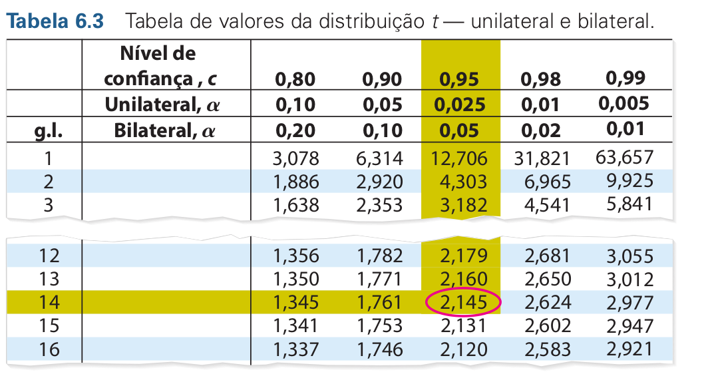

![]()
[1] 2.144787Teste de Hipótese
Nesta sessão discutiremos brevemente os conceitos de Intevalo de Confiança, Teste de Hipótese, p-valor e nível de significância. Compreender esses conceitos é fundamental uma vez que eles são a base dos testes estatísticos que utilizaremos daqui pra frente.
Esse material não tem a intenção de ser uma discussão aprofundada sobre estes conceitos, para os mais interessados sugiro a leitura de fontes complementares a exemplo dos livros:
Inferência Estatística - Casella e Berger
Estatística Prática para Cientistas de Dados - Bruce e Bruce - O’Reilly
1 Intervalos de Confiança
Estimativas como a média amostral \(\large (\bar{x})\) nos fornecem um único valor plausível para um parâmetro. Estas estatísticas são chamadas de estimativas pontuais. Mas sabemos que existe um erro associado a toda estimativa, e o próximo passo natural seria fornecer um intervalo plausível de valores para o parâmetro, isto é o que chamamos de intervalo de confiança (IC).
A porcentagem associada ao IC é chamada nível de confiança. Quanto maior o nível de confiança, maior o intervalo, e quanto menor a amostra, maior o intervalo, ou seja, maior a incerteza. Os níveis de confiança mais comuns são 90%, 95% ou 99%.
Mas o que de fato “95% de confiança” significa?
O real significado de confiança deve ser compreendido a partir do ponto de vista de um processo generativo. Imagine que amostramos muitas (infinitas) amostras de uma população, e construimos ICs de 95% para cada amostra. Assim, 95% destes ICs que foram construídos provavelmente contém o atual valor do parâmetro que queremos estimar.
2 Margem de Erro \(E\)
A diferença entre a estimativa pontual \(\bar{x}\) e o parâmetro populacional \(\mu\) é chamada de erro de amostragem ou erro amostral.
Para uma média populacional \(\mu\) em que conhecemos o \(\sigma\), dado um nível de confianaça \(c\), podemos estimar \(E\) com:
\[ E = Z_c\frac{\sigma}{\sqrt{n}} \]
Desde que atendidas duas condições:
A amostra é aleatória;
A população é normalmente distribuída ou n \(\geq\) 30;
Assim, construímos um intervalo de confiança para \(\mu\) como sendo:
\[\large \bar{x}-E < \mu < \bar{x} + E\]
Em uma distibuição normal padrão, os valores tabelados usuais para \(Z_c\) encontram-se na tabela abaixo:
| Confidence Level | 90% | 95% | 99% | 99.9% |
|---|---|---|---|---|
| \(Z \ Value\) | 1.65 | 1.96 | 2.58 | 3.291 |
Entretanto, na maioria das vezes \(\sigma\) é desconhecido, e utilizamos o desvio padrão amostral \(S\) para estimar \(E\). Quando a variável aleatória é normalmente (ou aproximadamente normalmente) distribuída, a média amostral segue distribuição \(t\) com graus de liberdade \(n-1\).
Dessa forma, estimamos o erro padrão por:
\[ E = t_c\frac{S}{\sqrt{n}} \]
Para obtermos o valor de \(t_c\) consultamos a tabela de valores da distribuição \(t\). Podemos também obter os valores de \(t_c\) usando o R. Por exemplo, se quisermos saber o valor tabelado para um alfa de 0.05 com 14 graus de liberdade.
0.975 = 1 - (0.05 / 2), porque é bilateral e você divide α pelas duas caudas

| Tipo de Teste | Quantos lados? | Significado | Quando usar? |
|---|---|---|---|
| Unilateral | 1 cauda | Testa se a média é maior ou menor | Quando você tem uma hipótese com direção definida (ex: “maior que”) |
| Bilateral | 2 caudas | Testa se a média é diferente | Quando a hipótese alternativa não tem direção (ex: “diferente de”) |